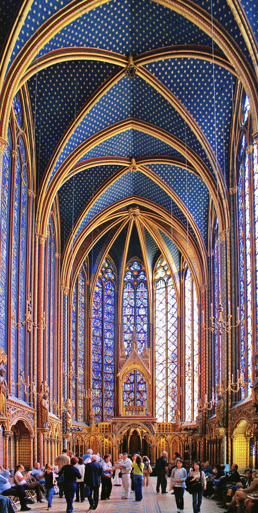
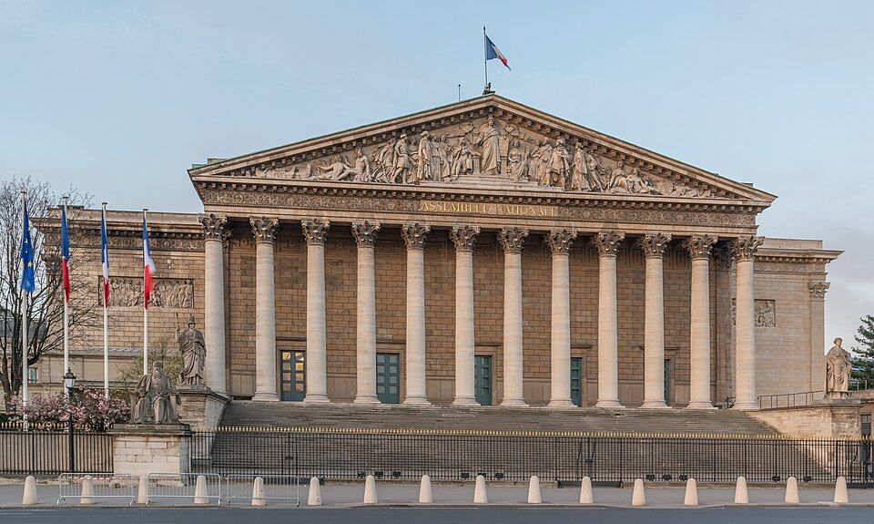

MARIO · 16 novembre 2026
Vocabulaire, expressions et grammaireLe rhume, le tableau, la perte, la démocratie, entraîner, la montéeIl raffreddore, il quadro, la perdita, la democrazia, comportare, l'innalzamento
Le pont Alexandre III et la tour Eiffel, le soir · Paris
Mario, voici les mots et les expressions de notre dernière leçon. Touchez une carte pour la retourner, écoutez les exemples, puis faites les deux exercices. Toutes les phrases d'exemple utilisent l'hypothèse avec si.
Mario, ecco le parole e le espressioni della nostra ultima lezione. Tocchi una carta per girarla, ascolti gli esempi, poi svolga i due esercizi. Tutte le frasi di esempio utilizzano il periodo ipotetico con si.
1
Les mots en cartes
Le parole in carte

le rhume
nom masculin
il raffreddore
La Sainte-Chapelle, chef-d'œuvre gothique, 1242-1248 · Paris
↻ toucher pour retourner · toccare per girare
le rhume · il raffreddore
si + présent
Si tu sors sans écharpe, tu vas attraper un rhume.
Se esci senza sciarpa, ti prenderai un raffreddore.
si + imparfait
Si je n'avais pas ce rhume, je viendrais au musée avec toi.
Se non avessi questo raffreddore, verrei al museo con te.
On dit attraper un rhume (prendersi un raffreddore) et être enrhumé (essere raffreddato).
Si dice attraper un rhume e être enrhumé.
↻

le tableau
nom masculin
il quadro
Le Berceau, Berthe Morisot, 1872 · Musée d'Orsay, Paris
↻ toucher pour retourner · toccare per girare
le tableau · il quadro
si + imparfait
Si ce tableau n'avait pas de cadre doré, il paraîtrait plus moderne.
Se questo quadro non avesse una cornice dorata, sembrerebbe più moderno.
si + plus-que-parfait
Si nous avions réservé, nous aurions vu les tableaux de Morisot sans faire la queue.
Se avessimo prenotato, avremmo visto i quadri della Morisot senza fare la coda.
Attention : le cadre n'est pas le tableau, c'est la cornice. Voir le tableau ci-dessous.
Attenzione: le cadre non è il quadro, è la cornice.
↻

la perte · le gain
noms
la perdita · il guadagno
L'Arc de triomphe de l'Étoile, 1806-1836 · Paris
↻ toucher pour retourner · toccare per girare
la perte · le gain · la perdita · il guadagno
si + présent
Si vous ne vendez pas ces titres, la perte restera théorique.
Se non vende questi titoli, la perdita resterà teorica.
si + plus-que-parfait
Si j'avais vendu en janvier, j'aurais réalisé de beaux gains.
Se avessi venduto a gennaio, avrei realizzato dei bei guadagni.
La perte restera théorique : tant qu'on ne vend pas, on n'a rien perdu « pour de vrai ».
La perdita resterà teorica: finché non si vende, non si è perso nulla «davvero».
↻

la démocratie
nom féminin
la democrazia
Le palais Bourbon, siège de l'Assemblée nationale · Paris
↻ toucher pour retourner · toccare per girare
la démocratie · la democrazia
si + imparfait
Si les citoyens ne votaient plus, la démocratie serait en danger.
Se i cittadini non votassero più, la democrazia sarebbe in pericolo.
si + plus-que-parfait
Si la diplomatie avait réussi, la guerre n'aurait pas eu lieu.
Se la diplomazia avesse avuto successo, la guerra non avrebbe avuto luogo.
On prononce [demɔkʁasi] : le t se prononce comme un s.
Si pronuncia [demɔkʁasi]: la t si pronuncia come una s.
↻

entraîner
verbe
comportare, provocare
Le palais Garnier, Charles Garnier, 1875 · Paris
↻ toucher pour retourner · toccare per girare
entraîner · comportare, provocare
si + présent
Si la Banque centrale baisse ses taux, cela entraînera une hausse de la Bourse.
Se la Banca centrale abbassa i tassi, ciò comporterà un rialzo della Borsa.
si + imparfait
Si les taux montaient encore, cela entraînerait une baisse des prix de l'immobilier.
Se i tassi salissero ancora, ciò provocherebbe un calo dei prezzi degli immobili.
entraîner quelque chose = avoir pour conséquence. Ne pas confondre avec s'entraîner (allenarsi).
entraîner qualcosa = avere come conseguenza. Da non confondere con s'entraîner (allenarsi).
↻
la montée
nom féminin
l'innalzamento, l'aumento, la salita
La Seine, le pont Alexandre III et les Invalides · Paris
↻ toucher pour retourner · toccare per girare
la montée · l'innalzamento, l'aumento, la salita
si + présent
Si la montée des eaux continue, les quais de la Seine seront fermés.
Se l'innalzamento delle acque continua, le banchine della Senna saranno chiuse.
si + plus-que-parfait
Si l'Arno avait été mieux surveillé en 1966, la montée des eaux n'aurait pas abîmé autant d'œuvres à Florence.
Se l'Arno fosse stato sorvegliato meglio nel 1966, l'innalzamento delle acque non avrebbe danneggiato così tante opere a Firenze.
Aussi : la montée des prix, la montée des taux, la montée des tensions.
Anche: l'aumento dei prezzi, dei tassi, delle tensioni.
↻
2
Rappel : les quatre hypothèses avec si
Promemoria: i quattro periodi ipotetici
si + présent → présent, futur, impératifuna condizione reale, possibile
Si tu vends maintenant, tu perds de l'argent.
Se vendi adesso, perdi dei soldi.
si + imparfait → conditionnel présentun'ipotesi nel presente o nel futuro
Si je vendais maintenant, je perdrais de l'argent.
Se vendessi adesso, perderei dei soldi.
si + plus-que-parfait → conditionnel passéun'ipotesi nel passato, ormai irreale
Si j'avais vendu hier, j'aurais perdu de l'argent.
Se avessi venduto ieri, avrei perso dei soldi.
si + plus-que-parfait → conditionnel présentun'ipotesi passata con conseguenza oggi
Si j'avais vendu hier, je serais plus tranquille aujourd'hui.
Se avessi venduto ieri, oggi sarei più tranquillo.
Après si, jamais de futur ni de conditionnel : si je vendais, jamais « si je vendrais ».
Dopo si, mai futuro né condizionale.
3
Le cadre, le tableau, la peinture, le mur
Cornice, quadro, pittura, parete
| le cadrela cornice | Le tableau est dans un cadre doré. Il quadro è in una cornice dorata. Aussi : un cadre = un dirigente ; dans le cadre de = nell'ambito di. Anche: un cadre = un dirigente; dans le cadre de = nell'ambito di. |
| le tableauil quadro | Le tableau de Morisot est au musée d'Orsay. Il quadro della Morisot si trova al museo d'Orsay. Aussi : un tableau Excel = una tabella. Anche: un tableau Excel = una tabella Excel. |
| une peintureun dipinto | C'est une très belle peinture impressionniste. È un bellissimo dipinto impressionista. Une peinture = l'œuvre peinte (presque comme un tableau). Une peinture = l'opera dipinta (quasi come un quadro). |
| la peinturela pittura · la vernice | Il aime la peinture métaphysique. Attention, peinture fraîche ! Ama la pittura metafisica. Attenzione, vernice fresca! L'art de peindre, ou le produit pour peindre un mur. L'arte di dipingere, oppure il prodotto per dipingere un muro. |
| le muril muro, la parete | Le tableau est accroché au mur. Il quadro è appeso alla parete. On accroche un tableau au mur. Si appende un quadro alla parete. |
4
Prononcer -tie : [si] ou [ti] ?
Pronunciare -tie
Dans la plupart des noms en -tie, le t se prononce [s]. Astuce : si le mot italien finit en -zia, on dit [si].
Nella maggior parte dei nomi in -tie, la t si pronuncia [s]. Trucco: se la parola italiana finisce in -zia, si dice [si].
t = [s] · touchez les mots pour les écouter
t = [s] · tocchi le parole per ascoltarle
Mais on prononce [ti] après un s (modestie, dynastie) et dans les noms qui viennent d'un verbe (sortir → la sortie, partir → la partie, garantir → la garantie).
Ma si pronuncia [ti] dopo una s e nei nomi che derivano da un verbo.
t = [t]
t = [t]: la t si pronuncia come in italiano
01
EXERCICE 1
Choisissez le bon mot.
Scelga la parola giusta.
1
Si tu restes sous la pluie sans parapluie, tu vas attraper un ______.
Se resti sotto la pioggia senza ombrello, ti prenderai un raffreddore.
Si tu restes sous la pluie sans parapluie, tu vas attraper un rhume.
Se resti sotto la pioggia senza ombrello, ti prenderai un raffreddore.
💡 le rhume = il raffreddore (le rhum = il rum !)
le rhume = il raffreddore (le rhum = il rum!)
2
Si j'avais acheté ce tableau, je l'aurais mis dans un ______ doré.
Se avessi comprato questo quadro, l'avrei messo in una cornice dorata.
Si j'avais acheté ce tableau, je l'aurais mis dans un cadre doré.
Se avessi comprato questo quadro, l'avrei messo in una cornice dorata.
💡 le cadre = la cornice
le cadre = la cornice
3
Si vous gardez vos actions jusqu'en mars, la ______ restera théorique.
Se tiene le sue azioni fino a marzo, la perdita resterà teorica.
Si vous gardez vos actions jusqu'en mars, la perte restera théorique.
Se tiene le sue azioni fino a marzo, la perdita resterà teorica.
💡 la perte = la perdita
la perte = la perdita
4
Si les taux baissaient, cela ______ une hausse des investissements.
Se i tassi scendessero, ciò comporterebbe un aumento degli investimenti.
Si les taux baissaient, cela entraînerait une hausse des investissements.
Se i tassi scendessero, ciò comporterebbe un aumento degli investimenti.
💡 si + imparfait → conditionnel : entraînerait
si + imperfetto → condizionale: entraînerait
5
Si la ______ des eaux continue, le musée fermera ses salles du rez-de-chaussée.
Se l'innalzamento delle acque continua, il museo chiuderà le sale del pianterreno.
Si la montée des eaux continue, le musée fermera ses salles du rez-de-chaussée.
Se l'innalzamento delle acque continua, il museo chiuderà le sale del pianterreno.
💡 la montée des eaux = l'innalzamento delle acque
la montée des eaux = l'innalzamento delle acque
6
Si ta fille t'invite à Paris, accroche ce tableau au ______ de ton bureau avant de partir !
Se tua figlia ti invita a Parigi, appendi questo quadro alla parete del tuo ufficio prima di partire!
Si ta fille t'invite à Paris, accroche ce tableau au mur de ton bureau avant de partir !
Se tua figlia ti invita a Parigi, appendi questo quadro alla parete del tuo ufficio prima di partire!
💡 accrocher au mur = appendere alla parete
accrocher au mur = appendere alla parete
02
EXERCICE 2
Écoutez-vous : comment se prononce le t du mot en gras ?
Come si pronuncia la t della parola in grassetto?
1
Si la diplomatie échouait, les marchés réagiraient très mal.
Se la diplomazia fallisse, i mercati reagirebbero molto male.
Si la diplomatie échouait, les marchés réagiraient très mal.
Se la diplomazia fallisse, i mercati reagirebbero molto male.
2
Si vous prenez la sortie 3, vous arriverez directement au Louvre.
Se prende l'uscita 3, arriverà direttamente al Louvre.
Si vous prenez la sortie 3, vous arriverez directement au Louvre.
Se prende l'uscita 3, arriverà direttamente al Louvre.
3
Si la bureaucratie était plus simple, j'ouvrirais un bureau à Paris.
Se la burocrazia fosse più semplice, aprirei un ufficio a Parigi.
Si la bureaucratie était plus simple, j'ouvrirais un bureau à Paris.
Se la burocrazia fosse più semplice, aprirei un ufficio a Parigi.
4
Si le contrat avait offert une garantie, mon client l'aurait signé.
Se il contratto avesse offerto una garanzia, il mio cliente l'avrebbe firmato.
Si le contrat avait offert une garantie, mon client l'aurait signé.
Se il contratto avesse offerto una garanzia, il mio cliente l'avrebbe firmato.
5
Si l'inertie des investisseurs continue, la Bourse restera stable.
Se l'inerzia degli investitori continua, la Borsa resterà stabile.
Si l'inertie des investisseurs continue, la Bourse restera stable.
Se l'inerzia degli investitori continua, la Borsa resterà stabile.
6
Si tu avais lu cette partie du rapport, tu aurais compris le problème.
Se avessi letto questa parte del rapporto, avresti capito il problema.
Si tu avais lu cette partie du rapport, tu aurais compris le problème.
Se avessi letto questa parte del rapporto, avresti capito il problema.
À revoir · da ripassare
Da ripassare: ogni punto rimanda alla spiegazione.
Vos réponses restent enregistrées sur cet appareil. Pour continuer sur un autre appareil, créez un lien et ouvrez-le là-bas.
Le sue risposte restano salvate su questo dispositivo. Per continuare su un altro dispositivo, crei un link e lo apra lì.